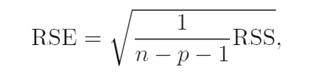

<!DOCTYPE html>


<html lang="zh-CN">


<head>
  <meta charset="utf-8" />
    
  <meta name="viewport" content="width=device-width, initial-scale=1, maximum-scale=1" />
  <title>
    线性回归与R代码实现 |  VincereZhou&#39;s blog
  </title>
  <meta name="generator" content="hexo-theme-ayer">
  
  <link rel="shortcut icon" href="/images/mojie.jpg" />
  
  
<link rel="stylesheet" href="/dist/main.css">

  <link rel="stylesheet" href="https://cdn.jsdelivr.net/gh/Shen-Yu/cdn/css/remixicon.min.css">
  
<link rel="stylesheet" href="/css/custom.css">

  
  <script src="https://cdn.jsdelivr.net/npm/pace-js@1.0.2/pace.min.js"></script>
  
  

  

<link rel="alternate" href="/atom.xml" title="VincereZhou's blog" type="application/atom+xml">
</head>

</html>

<body>
  <div id="app">
    
      
    <main class="content on">
      <section class="outer">
  <article
  id="post-线性回归与R代码实现"
  class="article article-type-post"
  itemscope
  itemprop="blogPost"
  data-scroll-reveal
>
  <div class="article-inner">
    
    <header class="article-header">
       
<h1 class="article-title sea-center" style="border-left:0" itemprop="name">
  线性回归与R代码实现
</h1>
 

    </header>
     
    <div class="article-meta">
      <a href="/posts/6cb58071/" class="article-date">
  <time datetime="2021-05-06T06:19:01.000Z" itemprop="datePublished">2021-05-06</time>
</a> 
  <div class="article-category">
    <a class="article-category-link" href="/categories/%E7%90%86%E8%AE%BA%E5%AD%A6%E4%B9%A0/">理论学习</a> / <a class="article-category-link" href="/categories/%E7%90%86%E8%AE%BA%E5%AD%A6%E4%B9%A0/%E7%BA%BF%E6%80%A7%E6%A8%A1%E5%9E%8B/">线性模型</a>
  </div>
  
<div class="word_count">
    <span class="post-time">
        <span class="post-meta-item-icon">
            <i class="ri-quill-pen-line"></i>
            <span class="post-meta-item-text"> 字数统计:</span>
            <span class="post-count">2k</span>
        </span>
    </span>

    <span class="post-time">
        &nbsp; | &nbsp;
        <span class="post-meta-item-icon">
            <i class="ri-book-open-line"></i>
            <span class="post-meta-item-text"> 阅读时长≈</span>
            <span class="post-count">7 分钟</span>
        </span>
    </span>
</div>
 
    </div>
      
    <div class="tocbot"></div>


  
    <div class="article-entry" itemprop="articleBody">
       
  <p>线性回归是最基础的统计模型，也应该是应用最广泛的应用模型。线性回归的因变量必须为连续变量；自变量可以为连续变量，也可以为分类变量（转化为哑变量/虚拟变量）</p>
<p>这里是我通过看资料对线性回归的总结。</p>
<span id="more"></span>
<h1>参考资料</h1>
<p><a target="_blank" rel="noopener" href="https://www.statlearning.com/">An Introduction to Statistical Learning</a></p>
<h1>线性回归的假设</h1>
<h2 id="1-自变量和因变量线性相关">1 自变量和因变量线性相关</h2>
<p>线性相关的意思是，无论自变量多大，自变量每增加一个单位，因变量都会产生固定的变化。</p>
<h2 id="2-多个自变量之间具有可加性">2 多个自变量之间具有可加性</h2>
<p>无论 X1 多大，X2 每增加一个单位，因变量都会产生固定的变化。如果满足这个条件，说明 X1和X2 之间具有可加性。否则说明 X1 和 X2 之间存在<strong>互作</strong>效应。用图表示如下（左图两条线平行说明不存在互作，右图不平行说明存在互作）：</p>
<p></p>
<h2 id="3-多个自变量之间彼此独立">3 多个自变量之间彼此独立</h2>
<p>多个自变量之间不能存在<strong>相关</strong>关系。相关关系分为两种，一种是简单的两两之间的相关，这个通过相关系数矩阵就能看出来是否存在两个变量之间的明显的相关（看绝对值）；第二种是多重线性相关（Multicollinearity），例如 X1 = a + bX2 + cX3，一个自变量可以用其他的多个自变量来解释，就说明存在多重线性相关。</p>
<h2 id="4-观测值的误差项之间互相独立">4 观测值的误差项之间互相独立</h2>
<p>误差项即实际值 - 预测值。如果观测值之间存在我们没有添加到模型中的其他影响因素，那么误差项之间就可能存在相关关系，比如有些样本搜集自同一个家庭的成员，而我们没有把家庭这个因素加入到模型中。</p>
<h2 id="5-误差项（ε）呈正态分布，期望为0，方差为定值">5 误差项（ε）呈正态分布，期望为0，方差为定值</h2>
<blockquote>
<p>这里其实分为两个假设。第一个假设：误差项服从均值为0的正态分布。第二个假设：误差项的方差为定值（不变）。这两个假设是为了保证回归模型在小样本下能够顺利进行假设检验。正态分布假设仅在小样本的情况下需要，大样本的情况下则不需要，因为有中心极限定理做正态性的支撑。而方差齐性则保证最小二乘法估计出来的统计量具有最小的方差。如果违反了这个假设，置信区间会变宽，这称之为<strong>异方差性（heteroscedasticity）</strong>。当异方差性出现的时候，如果仍采用最小二乘法估计参数，会导致参数的t检验值被高估，可能造成本来不显著的某些参数变为显著，使假设检验失去意义。</p>
<p><a target="_blank" rel="noopener" href="https://www.cnblogs.com/HuZihu/p/10142737.html">https://www.cnblogs.com/HuZihu/p/10142737.html</a></p>
</blockquote>
<h2 id="6-自变量和误差项之间互相独立">6 自变量和误差项之间互相独立</h2>
<blockquote>
<p>模型中一个或多个自变量与随机误差项存在相关关系，这称之为<strong>内生性（endogeneity）</strong>。内生性通常由于遗漏变量而导致的，因此是一个普遍存在的问题。内生性会导致模型参数估计不准确。</p>
<p><a target="_blank" rel="noopener" href="https://www.cnblogs.com/HuZihu/p/10142737.html">https://www.cnblogs.com/HuZihu/p/10142737.html</a></p>
</blockquote>
<h1>简单线性回归</h1>
<h2 id="β0-β1-参数估计-最小二乘法">β0, β1 参数估计 - 最小二乘法</h2>
<p>最小二乘的思路是，查找使得<strong>误差平方和</strong>或<strong>均方误差</strong>最小的参数。</p>
<p>我们首先知道，<strong>误差 = 实际值 - 预测值</strong>，我们的目的实际是想要所有观察值的总体的误差最小，因为误差有正有负，如果采用误差项直接相加会互相抵消，因为我们采用误差的平方进行相加，得到误差平方和 (<em>residual sum of squares</em>, RSS)。</p>
<p></p>
<p>或者写成</p>
<p></p>
<p>除以总共的样本数 n，便得到<strong>均方误差</strong>（MSE），使得 RSS/MSE 最小的参数便是最小二乘的最优解。写成公式如下（缺推导过程）：</p>
<p></p>
<p>画成等高图如下（作图横纵坐标为β0和β1，图中一圈表示相同的RSS，数字即为 RSS 大小），我们可以看到这是向下凹的图形，只有一个点RSS 最小。</p>
<p></p>
<h3 id="为什么不用残差的绝对值？">为什么不用残差的绝对值？</h3>
<p>我上统计课的时候就有这个问题，就一直有这个疑问，如果因为残差有方向，不能直接求和，那为什么不直接用绝对值呢？这不是更直接的更贴近残差本质的思路吗？</p>
<p>后来上了吴恩达老师的机器学习课，知道了代价函数的概念，寻找代价函数最小值的最简单的方法就是<strong>求导</strong>。最小二乘法的代价函数就是 RSS/MSE，由于这里采用平方和（二次函数），<strong>求导会直接变成一次函数</strong>。而如果使用残差的绝对值的和，根本无法进行简单的求导，就无法简单地得到最优解的公式。</p>
<p>所以，目前我个人的理解是使用平方和<strong>简化了运算</strong>。</p>
<h2 id="参数估计准确性">参数估计准确性</h2>
<p>我们使用的模型为</p>
<p></p>
<p>这里的<strong>残差项包含了所有我们模型中没有考虑到的地方</strong>，比如Y 和 X 的关系不是线性的，还有其他的影响因素，存在测量误差等等。</p>
<p>为了估计参数的估计值与真实值之间的误差，我们需要计算两个参数估计值的标准误，使用下列公式（缺证明）</p>
<p></p>
<p>这里 σ2 是残差方差，是未知的。残差标准差 σ 可以用 RSE (residual standard error) 来估计（缺证明）。</p>
<p></p>
<p>知道了标准误，我们可以计算<strong>β0、β1的置信区间</strong>，例如 β1 的 95%的置信区间为：</p>
<p></p>
<p>如果  β1 的 95%的置信区间 <strong>包含 0</strong>，那说明不能拒绝  β1  = 0 的原假设，我们认为不存在线性相关。</p>
<p>我们也可以通过 t 检验得到 P值。构建 t 统计量如下（自由度 n-2）：</p>
<p></p>
<p>同理可以检验β0 估计值的P值（零假设：β0 = 0），但实际上截距的显著性没啥大的意义，主要还是看 β1。如果  β1 的 P值小于 0.05，我们认为  β1 ≠ 0。</p>
<h2 id="模型准确性">模型准确性</h2>
<p>上面是得到估计的两个参数的准确性，这里我们想知道，我们构建的简单线性模型与数据的契合程度（<em>which the model fits the data</em>）。</p>
<p>线性模型一般用两个指标， <abbr title="residual standard error">RSE</abbr> ，R<sup>2</sup> 。</p>
<h3 id="residual-standard-error-RSE"><em>residual standard error</em>(RSE)</h3>
<p></p>
<p>RSE 是<strong>残差的标准误的估计值</strong>，它表示<strong>预测值与真实值的平均偏差量</strong>（这句话需要理解标准误的概念：标准误是样本统计量的标准差，均值为真值，结合标准差的公式，可知标准误就是预测值与真实值的平均偏差量（绝对值），所以一般提供参数估计值的时候，都会写成 参数估计值±<strong>标准误</strong>的形式）。</p>
<p>RSE 是最直接说明模型准确性的统计量，它的缺点是有单位，是一个绝对值，仅仅是RSE你不知道到底是大还是小，所以你还得和因变量的均值啥的进行比较才知道相对大小。</p>
<h3 id="R-sup-2-sup">R<sup>2</sup></h3>
<p>R<sup>2</sup> 指的是因变量方差能够被线性模型解释的比例，始终在0和1之间，是一个相对值，越大越好。公式如下：</p>
<p></p>
<p>其中 TSS (<em>total sum of squares</em>) 计算如下，表示因变量的总的方差。</p>
<p></p>
<p>R<sup>2</sup> 比 RSE 更容易解释，因此更常用，但是还是面临一个问题，<strong>R<sup>2</sup> 多大才算结果很好呢？<strong>这可能得根据实际情况来定，在我们一般的实验中，实际上往往还有很多</strong>未测量的影响因素</strong>，所以 RSS 可能比较大，这时可能 R<sup>2</sup> 哪怕比较小可能也说明有用。</p>
<h2 id="复杂线性模型">复杂线性模型</h2>
<p>未完待续……</p>
 
      <!-- reward -->
      
      <div id="reword-out">
        <div id="reward-btn">
          打赏
        </div>
      </div>
      
    </div>
    

    <!-- copyright -->
    
    <div class="declare">
      <ul class="post-copyright">
        <li>
          <i class="ri-copyright-line"></i>
          <strong>版权声明： </strong>
          
          本博客所有文章除特别声明外，著作权归作者所有。转载请注明出处！
          
        </li>
      </ul>
    </div>
    
    <footer class="article-footer">
       
<div class="share-btn">
      <span class="share-sns share-outer">
        <i class="ri-share-forward-line"></i>
        分享
      </span>
      <div class="share-wrap">
        <i class="arrow"></i>
        <div class="share-icons">
          
          <a class="weibo share-sns" href="javascript:;" data-type="weibo">
            <i class="ri-weibo-fill"></i>
          </a>
          <a class="weixin share-sns wxFab" href="javascript:;" data-type="weixin">
            <i class="ri-wechat-fill"></i>
          </a>
          <a class="qq share-sns" href="javascript:;" data-type="qq">
            <i class="ri-qq-fill"></i>
          </a>
          <a class="douban share-sns" href="javascript:;" data-type="douban">
            <i class="ri-douban-line"></i>
          </a>
          <!-- <a class="qzone share-sns" href="javascript:;" data-type="qzone">
            <i class="icon icon-qzone"></i>
          </a> -->
          
          <a class="facebook share-sns" href="javascript:;" data-type="facebook">
            <i class="ri-facebook-circle-fill"></i>
          </a>
          <a class="twitter share-sns" href="javascript:;" data-type="twitter">
            <i class="ri-twitter-fill"></i>
          </a>
          <a class="google share-sns" href="javascript:;" data-type="google">
            <i class="ri-google-fill"></i>
          </a>
        </div>
      </div>
</div>

<div class="wx-share-modal">
    <a class="modal-close" href="javascript:;"><i class="ri-close-circle-line"></i></a>
    <p>扫一扫，分享到微信</p>
    <div class="wx-qrcode">
      
    </div>
</div>

<div id="share-mask"></div>  
  <ul class="article-tag-list" itemprop="keywords"><li class="article-tag-list-item"><a class="article-tag-list-link" href="/tags/%E6%95%B0%E6%8D%AE%E5%88%86%E6%9E%90/" rel="tag">数据分析</a></li><li class="article-tag-list-item"><a class="article-tag-list-link" href="/tags/%E7%90%86%E8%AE%BA%E5%AD%A6%E4%B9%A0/" rel="tag">理论学习</a></li><li class="article-tag-list-item"><a class="article-tag-list-link" href="/tags/%E7%BA%BF%E6%80%A7%E6%A8%A1%E5%9E%8B/" rel="tag">线性模型</a></li></ul>

    </footer>
  </div>

   
  <nav class="article-nav">
    
    
      <a href="/posts/c442673f/" class="article-nav-link">
        <strong class="article-nav-caption">下一篇</strong>
        <div class="article-nav-title">搭建个人博客</div>
      </a>
    
  </nav>

   
<!-- valine评论 -->
<div id="vcomments-box">
  <div id="vcomments"></div>
</div>
<script src="//cdn1.lncld.net/static/js/3.0.4/av-min.js"></script>
<script src="https://cdn.jsdelivr.net/npm/valine@1.4.14/dist/Valine.min.js"></script>
<script>
  new Valine({
    el: "#vcomments",
    app_id: "yHN3kf7fHt5wvleM2DVoHLdY-gzGzoHsz",
    app_key: "RPIwmdftljIzOtAULwc7JCAp",
    path: window.location.pathname,
    avatar: "monsterid",
    placeholder: "1.昵称和邮箱必填，网址选填",
    recordIP: true,
  });
  const infoEle = document.querySelector("#vcomments .info");
  if (infoEle && infoEle.childNodes && infoEle.childNodes.length > 0) {
    infoEle.childNodes.forEach(function (item) {
      item.parentNode.removeChild(item);
    });
  }
</script>
<style>
  #vcomments-box {
    padding: 5px 30px;
  }

  @media screen and (max-width: 800px) {
    #vcomments-box {
      padding: 5px 0px;
    }
  }

  #vcomments-box #vcomments {
    background-color: #fff;
  }

  .v .vlist .vcard .vh {
    padding-right: 20px;
  }

  .v .vlist .vcard {
    padding-left: 10px;
  }
</style>

 
   
     
</article>

</section>
      <footer class="footer">
  <div class="outer">
    <ul>
      <li>
        Copyrights &copy;
        2019-2021
        <i class="ri-heart-fill heart_icon"></i> Vincere Zhou
      </li>
    </ul>
    <ul>
      <li>
        
        
        <span>
  <span><i class="ri-user-3-fill"></i>访问人数:<span id="busuanzi_value_site_uv"></span></s>
  <span class="division">|</span>
  <span><i class="ri-eye-fill"></i>浏览次数:<span id="busuanzi_value_page_pv"></span></span>
</span>
        
      </li>
    </ul>
    <ul>
      
    </ul>
    <ul>
      
    </ul>
    <ul>
      <li>
        <!-- cnzz统计 -->
        
        <script type="text/javascript" src='https://s9.cnzz.com/z_stat.php?id=1278069914&amp;web_id=1278069914'></script>
        
      </li>
    </ul>

    <!-- 与只只在一起天数 -->
	<ul>
		<li><span id="lovetime_span"></span></li>
	</ul>
    <script type="text/javascript">			
        function show_runtime() {
            window.setTimeout("show_runtime()", 1000);
            X = new Date("03/04/2021 22:11:00");
            Y = new Date();
            T = (Y.getTime() - X.getTime());
            M = 24 * 60 * 60 * 1000;
            a = T / M;
            A = Math.floor(a);
            b = (a - A) * 24;
            B = Math.floor(b);
            c = (b - B) * 60;
            C = Math.floor((b - B) * 60);
            D = Math.floor((c - C) * 60);
            lovetime_span.innerHTML = "只只和周周在一起了 " + A + "天" + B + "小时" + C + "分" + D + "秒"
        }
        show_runtime();
    </script>

  </div>
</footer>
      <div class="float_btns">
        <div class="totop" id="totop">
  <i class="ri-arrow-up-line"></i>
</div>

<div class="todark" id="todark">
  <i class="ri-moon-line"></i>
</div>

      </div>
    </main>
    <aside class="sidebar on">
      <button class="navbar-toggle"></button>
<nav class="navbar">
  
  <div class="logo">
    <a href="/"></a>
  </div>
  
  <ul class="nav nav-main">
    
    <li class="nav-item">
      <a class="nav-item-link" href="/">主页</a>
    </li>
    
    <li class="nav-item">
      <a class="nav-item-link" href="/archives">归档</a>
    </li>
    
    <li class="nav-item">
      <a class="nav-item-link" href="/categories">分类</a>
    </li>
    
    <li class="nav-item">
      <a class="nav-item-link" href="/tags">标签</a>
    </li>
    
    <li class="nav-item">
      <a class="nav-item-link" href="/friends">友链</a>
    </li>
    
    <li class="nav-item">
      <a class="nav-item-link" href="/posts/ac7827ff">我的只只</a>
    </li>
    
    <li class="nav-item">
      <a class="nav-item-link" href="/about">关于我</a>
    </li>
    
  </ul>
</nav>
<nav class="navbar navbar-bottom">
  <ul class="nav">
    <li class="nav-item">
      
      <a class="nav-item-link nav-item-search"  title="搜索">
        <i class="ri-search-line"></i>
      </a>
      
      
      <a class="nav-item-link" target="_blank" href="/atom.xml" title="RSS Feed">
        <i class="ri-rss-line"></i>
      </a>
      
    </li>
  </ul>
</nav>
<div class="search-form-wrap">
  <div class="local-search local-search-plugin">
  <input type="search" id="local-search-input" class="local-search-input" placeholder="Search...">
  <div id="local-search-result" class="local-search-result"></div>
</div>
</div>
    </aside>
    <script>
      if (window.matchMedia("(max-width: 768px)").matches) {
        document.querySelector('.content').classList.remove('on');
        document.querySelector('.sidebar').classList.remove('on');
      }
    </script>
    <div id="mask"></div>

<!-- #reward -->
<div id="reward">
  <span class="close"><i class="ri-close-line"></i></span>
  <p class="reward-p"><i class="ri-cup-line"></i>请我喝杯咖啡吧~</p>
  <div class="reward-box">
    
    <div class="reward-item">
      
      <span class="reward-type">支付宝</span>
    </div>
    
    
    <div class="reward-item">
      
      <span class="reward-type">微信</span>
    </div>
    
  </div>
</div>
    
<script src="/js/jquery-2.0.3.min.js"></script>


<script src="/js/lazyload.min.js"></script>

<!-- Tocbot -->


<script src="/js/tocbot.min.js"></script>

<script>
  tocbot.init({
    tocSelector: '.tocbot',
    contentSelector: '.article-entry',
    headingSelector: 'h1, h2, h3, h4, h5, h6',
    hasInnerContainers: true,
    scrollSmooth: true,
    scrollContainer: 'main',
    positionFixedSelector: '.tocbot',
    positionFixedClass: 'is-position-fixed',
    fixedSidebarOffset: 'auto'
  });
</script>

<script src="https://cdn.jsdelivr.net/npm/jquery-modal@0.9.2/jquery.modal.min.js"></script>
<link rel="stylesheet" href="https://cdn.jsdelivr.net/npm/jquery-modal@0.9.2/jquery.modal.min.css">
<script src="https://cdn.jsdelivr.net/npm/justifiedGallery@3.7.0/dist/js/jquery.justifiedGallery.min.js"></script>

<script src="/dist/main.js"></script>

<!-- ImageViewer -->

<!-- Root element of PhotoSwipe. Must have class pswp. -->
<div class="pswp" tabindex="-1" role="dialog" aria-hidden="true">

    <!-- Background of PhotoSwipe. 
         It's a separate element as animating opacity is faster than rgba(). -->
    <div class="pswp__bg"></div>

    <!-- Slides wrapper with overflow:hidden. -->
    <div class="pswp__scroll-wrap">

        <!-- Container that holds slides. 
            PhotoSwipe keeps only 3 of them in the DOM to save memory.
            Don't modify these 3 pswp__item elements, data is added later on. -->
        <div class="pswp__container">
            <div class="pswp__item"></div>
            <div class="pswp__item"></div>
            <div class="pswp__item"></div>
        </div>

        <!-- Default (PhotoSwipeUI_Default) interface on top of sliding area. Can be changed. -->
        <div class="pswp__ui pswp__ui--hidden">

            <div class="pswp__top-bar">

                <!--  Controls are self-explanatory. Order can be changed. -->

                <div class="pswp__counter"></div>

                <button class="pswp__button pswp__button--close" title="Close (Esc)"></button>

                <button class="pswp__button pswp__button--share" style="display:none" title="Share"></button>

                <button class="pswp__button pswp__button--fs" title="Toggle fullscreen"></button>

                <button class="pswp__button pswp__button--zoom" title="Zoom in/out"></button>

                <!-- Preloader demo http://codepen.io/dimsemenov/pen/yyBWoR -->
                <!-- element will get class pswp__preloader--active when preloader is running -->
                <div class="pswp__preloader">
                    <div class="pswp__preloader__icn">
                        <div class="pswp__preloader__cut">
                            <div class="pswp__preloader__donut"></div>
                        </div>
                    </div>
                </div>
            </div>

            <div class="pswp__share-modal pswp__share-modal--hidden pswp__single-tap">
                <div class="pswp__share-tooltip"></div>
            </div>

            <button class="pswp__button pswp__button--arrow--left" title="Previous (arrow left)">
            </button>

            <button class="pswp__button pswp__button--arrow--right" title="Next (arrow right)">
            </button>

            <div class="pswp__caption">
                <div class="pswp__caption__center"></div>
            </div>

        </div>

    </div>

</div>

<link rel="stylesheet" href="https://cdn.jsdelivr.net/npm/photoswipe@4.1.3/dist/photoswipe.min.css">
<link rel="stylesheet" href="https://cdn.jsdelivr.net/npm/photoswipe@4.1.3/dist/default-skin/default-skin.min.css">
<script src="https://cdn.jsdelivr.net/npm/photoswipe@4.1.3/dist/photoswipe.min.js"></script>
<script src="https://cdn.jsdelivr.net/npm/photoswipe@4.1.3/dist/photoswipe-ui-default.min.js"></script>

<script>
    function viewer_init() {
        let pswpElement = document.querySelectorAll('.pswp')[0];
        let $imgArr = document.querySelectorAll(('.article-entry img:not(.reward-img)'))

        $imgArr.forEach(($em, i) => {
            $em.onclick = () => {
                // slider展开状态
                // todo: 这样不好，后面改成状态
                if (document.querySelector('.left-col.show')) return
                let items = []
                $imgArr.forEach(($em2, i2) => {
                    let img = $em2.getAttribute('data-idx', i2)
                    let src = $em2.getAttribute('data-target') || $em2.getAttribute('src')
                    let title = $em2.getAttribute('alt')
                    // 获得原图尺寸
                    const image = new Image()
                    image.src = src
                    items.push({
                        src: src,
                        w: image.width || $em2.width,
                        h: image.height || $em2.height,
                        title: title
                    })
                })
                var gallery = new PhotoSwipe(pswpElement, PhotoSwipeUI_Default, items, {
                    index: parseInt(i)
                });
                gallery.init()
            }
        })
    }
    viewer_init()
</script>

<!-- MathJax -->

<!-- Katex -->

<!-- busuanzi  -->


<script src="/js/busuanzi-2.3.pure.min.js"></script>


<!-- ClickLove -->

<!-- ClickBoom1 -->

<!-- ClickBoom2 -->

<!-- CodeCopy -->


<link rel="stylesheet" href="/css/clipboard.css">

<script src="https://cdn.jsdelivr.net/npm/clipboard@2/dist/clipboard.min.js"></script>
<script>
  function wait(callback, seconds) {
    var timelag = null;
    timelag = window.setTimeout(callback, seconds);
  }
  !function (e, t, a) {
    var initCopyCode = function(){
      var copyHtml = '';
      copyHtml += '<button class="btn-copy" data-clipboard-snippet="">';
      copyHtml += '<i class="ri-file-copy-2-line"></i><span>COPY</span>';
      copyHtml += '</button>';
      $(".highlight .code pre").before(copyHtml);
      $(".article pre code").before(copyHtml);
      var clipboard = new ClipboardJS('.btn-copy', {
        target: function(trigger) {
          return trigger.nextElementSibling;
        }
      });
      clipboard.on('success', function(e) {
        let $btn = $(e.trigger);
        $btn.addClass('copied');
        let $icon = $($btn.find('i'));
        $icon.removeClass('ri-file-copy-2-line');
        $icon.addClass('ri-checkbox-circle-line');
        let $span = $($btn.find('span'));
        $span[0].innerText = 'COPIED';
        
        wait(function () { // 等待两秒钟后恢复
          $icon.removeClass('ri-checkbox-circle-line');
          $icon.addClass('ri-file-copy-2-line');
          $span[0].innerText = 'COPY';
        }, 2000);
      });
      clipboard.on('error', function(e) {
        e.clearSelection();
        let $btn = $(e.trigger);
        $btn.addClass('copy-failed');
        let $icon = $($btn.find('i'));
        $icon.removeClass('ri-file-copy-2-line');
        $icon.addClass('ri-time-line');
        let $span = $($btn.find('span'));
        $span[0].innerText = 'COPY FAILED';
        
        wait(function () { // 等待两秒钟后恢复
          $icon.removeClass('ri-time-line');
          $icon.addClass('ri-file-copy-2-line');
          $span[0].innerText = 'COPY';
        }, 2000);
      });
    }
    initCopyCode();
  }(window, document);
</script>


<!-- CanvasBackground -->


    
  </div>
<script src="/live2dw/lib/L2Dwidget.min.js?094cbace49a39548bed64abff5988b05"></script><script>L2Dwidget.init({"pluginRootPath":"live2dw/","pluginJsPath":"lib/","pluginModelPath":"assets/","tagMode":false,"debug":false,"model":{"jsonPath":"live2d-widget-model-wanko"},"display":{"position":"left","width":150,"height":300,"hOffset":80,"vOffset":-70},"mobile":{"show":false,"scale":0.5},"log":false});</script></body>

</html>